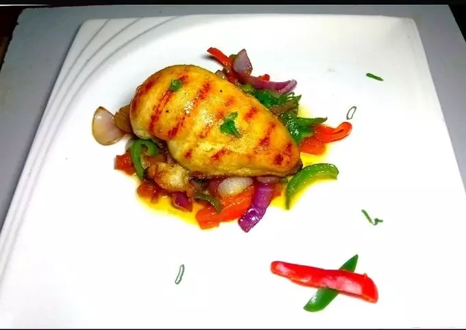

Pan Grilled Chicken

Description.
pan sauce—made with just a handful of ingredients and in a matter of minutes—can look and taste nearly as rich as a classic, labor-intensive French sauce. The base of a pan sauce is the fond, or browned bits, clinging to the bottom of the skillet after sautéing or searing meat, poultry, or fish.
Ingridents.
- 2 chicken breast
- Olive Oil
- Tomato
- Salt cube seasoning
- Spring onions
- Capsicum green and red
- Onions
Steps
- Marinate chicken for 24hours. Grill using grill pan, and leave warm in the oven.
- Wash and cut viggies and sauté. And some stock or wine to the viggies. Season and check taste.
- Plate viggies and top chicken. Drizzle some juice on top and garnish with spring onion leaves.